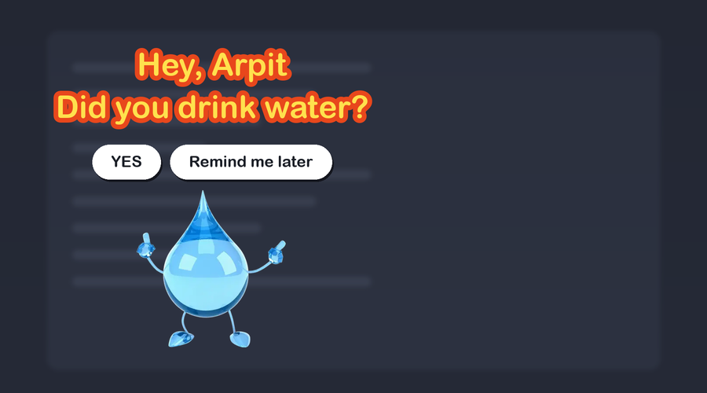

Companion nudges you to drink water, stretch, and step away — with a character that walks on, asks, and walks off. Nothing to read. Nothing to dismiss.

This is the whole app. It appears, asks, and leaves.
Notifications pile up in a corner and get swiped away without reading. A character walking across your screen is impossible to ignore — and takes one click to answer.
You can click straight through it. Only the character and its two buttons catch the cursor, so it never blocks what you're doing.
Pauses while you're gone, and won't greet you with a pile of missed reminders when you come back or wake your Mac.
No account, no sign-up, no tracking. Everything stays on your Mac.
Water, stretch, eye rest, posture, walk, medicine, lunch, breathe, wrap up, time to leave, wind down. Each one has its own schedule, wording and buttons — and only water is on until you say otherwise.
Fourteen are drawn into the app and work the moment you install it. Nineteen more are animated from video and download from inside Settings when you pick one — which is why this is a 7 MB download and not a 75 MB one.